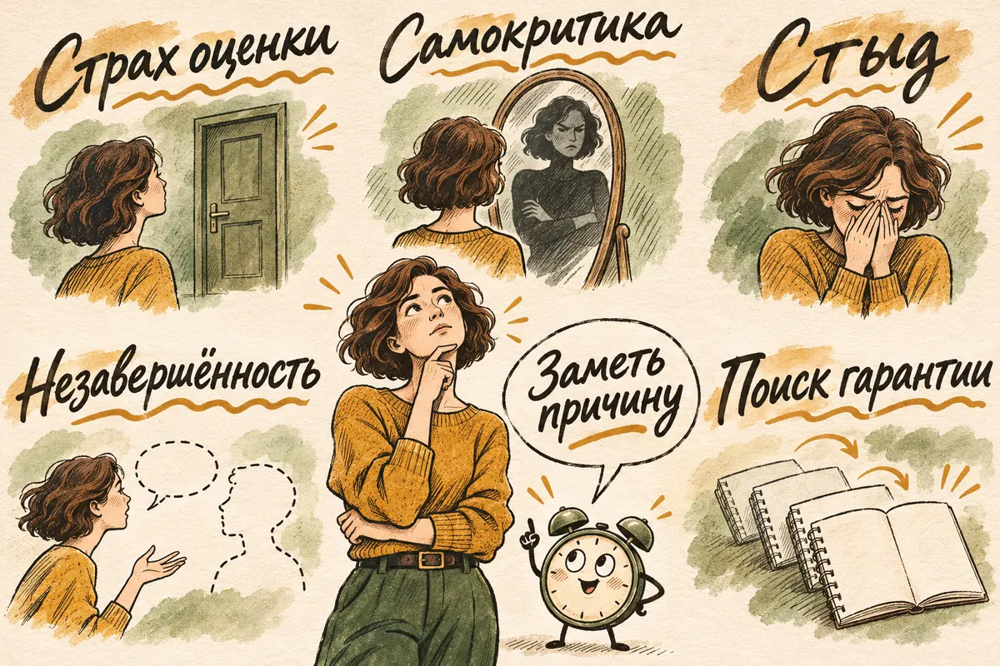
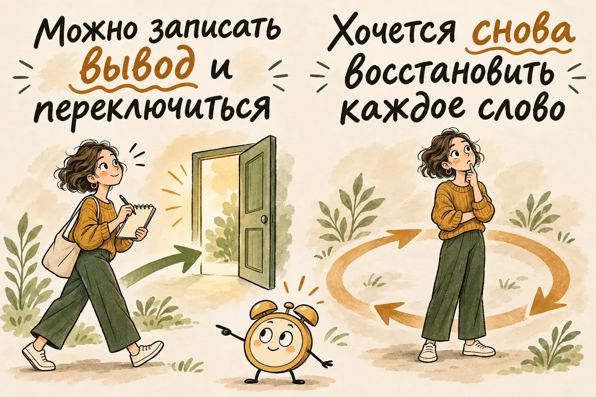
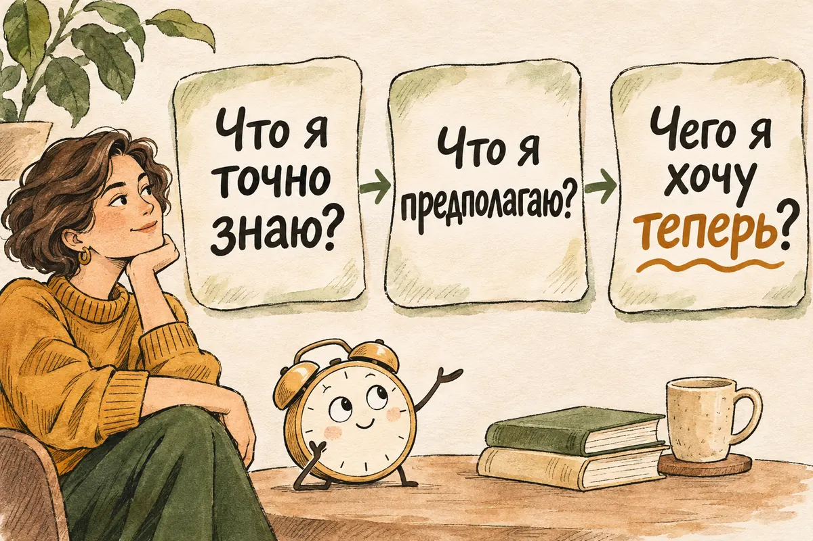

Главная → Блог → Разговоры в голове
Почему я прокручиваю разговоры в голове и как остановиться
07.11.2026 · 20 минут чтения
Встреча закончилась час назад, а разговор продолжается у вас в голове. «Зачем было это говорить?», «Собеседник замолчал — наверное, обиделся», «Надо было ответить иначе». Вы возвращаетесь к одной реплике, пока она не начинает казаться важнее всей встречи. В психологии такое повторяющееся обдумывание называют руминацией; в разговорной речи — «мысленной жвачкой». Кажется, что ещё один мысленный круг поможет разобраться, но часто он приносит только новое напряжение. Выход начинается с вопроса: здесь есть задача, которую можно решить, или вы пытаетесь получить уверенность в том, чего пока знать не можете?
Коротко
Прокручивать разговор после неловкого момента нормально. Мешает бесконечное возвращение к нему без нового решения. Если мысль снова пришла:
- Назовите событие, которое вас беспокоит.
- Отделите то, что произошло, от догадок о чужих мыслях.
- Решите, нужно ли что-то исправить, спросить или обозначить границу.
- Если действий пока нет, вернитесь к текущему занятию, даже если тревога не исчезла сразу.
Ни один из шагов не требует запрещать себе думать. Ниже — как применить их в разных ситуациях.
- Почему я постоянно прокручиваю разговоры в голове
- Почему я не могу перестать анализировать разговоры
- Размышление или зацикливание: как отличить
- Как перестать прокручивать разговоры в голове
- А вдруг мои слова действительно задели человека?
- Почему ночью всё кажется хуже
- Как постепенно выйти из привычки прокручивать разговоры
- Три ситуации, в которых мысль возвращается по разным причинам
- Что обычно не помогает остановить мысленный разбор
- Когда стоит обратиться за помощью
- Частые вопросы
- Главное, что можно взять с собой
Почему я постоянно прокручиваю разговоры в голове
В понедельник вы резко ответили коллеге. Во вторник по дороге домой вспомнили выражение его лица. В среду придумали идеальную фразу, которую стоило сказать. Мысленный разбор выглядит полезным: будто ещё один круг приведёт к точному ответу и убережёт от такой же ошибки. Иногда он и правда помогает — например, вы понимаете, за что хотите извиниться или о какой границе поговорить.
Но полезный разбор обычно меняет что-то в вашем следующем шаге. Руминация возвращает к одному и тому же вопросу: «Почему я всегда всё порчу?» или «А вдруг теперь обо мне плохо думают?» Такие вопросы трудно закрыть фактами. Вы не можете достоверно знать, что думает другой человек, если он сам об этом не сказал; даже его ответ не даёт гарантии на все будущие разговоры. А прожитую беседу уже нельзя отредактировать.
Рефлексия помогает осмыслить событие и свои чувства. Руминация — более широкий термин для повторяющегося обдумывания: оно может касаться не только разговоров, но и ошибок, решений или потерь. Повторный анализ уже завершившейся социальной ситуации исследователи называют постсобытийным обдумыванием. Он бывает и у людей без расстройства; при выраженном страхе негативной оценки может усиливать тревогу после общения и желание избегать следующих встреч. Обзор исследований показывает связь этого процесса с социальной тревожностью, но связь не означает, что одно непременно вызывает другое, а привычка вспоминать разговор сама по себе не является диагнозом.
Как одна фраза превращается в вечерний сериал
Представьте обычную рабочую встречу. Вы предложили идею, руководитель ответил: «Подумаем», и разговор пошёл дальше. По дороге домой вы вспоминаете только это слово. «Наверное, идея плохая». Через полчаса появляется новая мысль: «Моё выступление выглядело неподготовленным». К ночи она уже звучит как «мне здесь вообще не место». Между первой и последней фразой не появилось ни одного нового факта — изменился только масштаб вывода.
Такой переход легко пропустить, потому что каждая догадка кажется продолжением предыдущей. Попробуйте заметить три точки: событие («руководитель сказал “подумаем”»), объяснение («это отказ») и приговор себе («я плохо работаю»). Ни объяснение, ни приговор не следуют автоматически из события. Возможно, идею действительно не приняли. Но понять это можно по ответу и дальнейшим действиям, а не по количеству часов, потраченных на мысленный повтор.
Бывает и наоборот: после встречи вы ясно понимаете, что ваш ответ был резким. Тогда задача не в том, чтобы убедить себя, будто ничего не случилось. Задача — решить, хотите ли вы извиниться, уточнить свою позицию или оставить эпизод позади. Такое различение сохраняет ответственность за поступок и не превращает её в бесконечное наказание себя.
Почему я не могу перестать анализировать разговоры
Страх оценки. После разговора с руководителем, родственником или человеком, который вам нравится, особенно хочется знать: «Какое впечатление я произвожу?» Если ответа нет, воображение заполняет пробелы. Пауза собеседника превращается в доказательство недовольства, хотя у неё могло быть много причин. Так легко начать думать не о том, что произошло между вами, а только о том, каким вы показались со стороны.
Самокритика. У ошибки есть предел: «Собеседник не договорил из-за моих реплик; в следующий раз я дослушаю». У ярлыка предела нет: «Я ужасно веду себя с людьми». Первое можно учесть, второе заставляет искать новые подтверждения собственной «неправильности». Если этот голос знаком, полезен отдельный разбор постоянного чувства вины.
Стыд. Иногда мучает не возможное последствие фразы, а то, каким вы, как вам кажется, выглядели в чужих глазах: «Они увидели, что со мной что-то не так». Неловкий момент становится оценкой всей личности. Вернуться к сцене и доказать себе, что она была не такой страшной, хочется снова и снова; но один эпизод не определяет вас целиком. Здесь полезно сначала назвать чувство — «мне стыдно», — а затем отделить его от фактов о разговоре.
Незавершённость. Вы не сказали важного, промолчали после неприятной шутки или столкнулись с реальным нарушением границы. Тогда попытка просто отвлечься может не помогать: ситуация требует разговора или решения. О том, как обозначать свои условия без оправданий, есть статья про личные границы.
Привычка искать гарантию. Вы перечитываете переписку, уточняете у друга «мой ответ прозвучал нормально?», затем спрашиваете ещё раз. Если ответ уже получен, а облегчение быстро проходит, возможно, повторная проверка помогает лишь ненадолго снизить тревогу. Но бывает и так, что информации действительно не хватает или собеседник отвечает противоречиво. В таком случае полезнее прояснить саму ситуацию, чем считать любой вопрос «лишним».
Исследования различают повторяющиеся размышления, которые помогают осмыслить опыт, и те, что удерживают человека в негативном настроении. Разница зависит не только от темы мысли, но и от того, насколько конкретно вы мыслите и приближает ли это к действию. Этот вывод обсуждается в обзоре психолога Эдварда Уоткинса.
Почему кажется, что ещё немного — и станет ясно
Неопределённость трудно выдерживать, особенно когда отношения или работа вам важны. Повтор создаёт ощущение занятия делом: вы как будто ищете упущенную улику и готовитесь к будущему. Если к этому добавляется перфекционизм, планка становится ещё выше: нужно всегда находить идеальные слова, не смущаться и нравиться всем. Но память о разговоре не запись с камеры, а безупречной реплики для любой ситуации не существует.
Полезно проверить, не подменили ли вы цель. Цель «понять, хочу ли я поговорить с человеком» достижима. Цель «получить стопроцентную уверенность, что он никогда не обидится» — нет. Когда недостижимая цель становится условием спокойствия, даже хороший разговор ненадолго помогает: вскоре найдётся новая интонация, которую можно истолковать тревожно.
Здесь нет нужды спорить с каждой мыслью. Достаточно заметить, какую задачу вы пытаетесь решить, и спросить, существует ли у неё ответ. Если существует — определите, как его получить. Если нет — можно учиться жить с этой долей неизвестности, сохраняя право действовать и заботиться о себе.

Размышление или зацикливание: как отличить
| Вопрос | Полезный разбор | Зацикливание |
|---|---|---|
| О чём вы думаете? | «Мой голос прозвучал резко. Как вернуться к разговору?» | «Почему я всегда всё порчу?» |
| Появляется ли новое? | Да: вы замечаете факт, выбор или следующий шаг. | Нет: те же предположения звучат громче. |
| Что происходит через десять минут? | Можно записать вывод и переключиться. | Хочется снова восстановить каждое слово. |
| На что направлено внимание? | На ваш поступок и то, что можно изменить. | На попытку угадать чужую оценку или переписать прошлое. |
Это не тест и не строгая граница. Даже полезный разбор может перейти в петлю. Хороший ориентир: «Если я подумаю об этом ещё десять минут, какое новое действие станет возможным?» Если ответа нет, мысль, вероятно, уже ходит по кругу.
Когда разбор действительно нужен
Не всякое возвращение к разговору стоит останавливать. После важной ссоры человеку может понадобиться время, чтобы понять собственные чувства. Если вас не услышали, нарушили договорённость или вы сами поступили не так, как хотели, стоит выделить спокойное время для разбора. Отличие от петли — у такого разбора есть граница: вы хотите понять, что произошло и какое решение примете, а не добиться полного отсутствия тревоги.
Например, «после этой шутки мне было неприятно; на следующей встрече я скажу, что так со мной нельзя» — конкретный вывод. «Как он мог? Значит, меня вообще никто не уважает» — мысль, которая расширяет один эпизод до всей жизни. Возможно, разговор с этим человеком не нужен или сейчас небезопасен. Тогда решением может быть дистанция, разговор с тем, кому вы доверяете, или обращение за помощью. Полезный разбор не обязан заканчиваться примирением.
Иногда человек требует от себя «перестать накручивать», хотя беспокойство указывает на повторяющуюся реальную проблему. Если после каждой встречи с одним и тем же собеседником вы сомневаетесь в своих словах и боитесь его реакции, сосредоточьтесь не только на привычке думать, но и на том, как устроено это общение. Техники переключения внимания не должны заставлять вас терпеть то, что причиняет вред.

Как перестать прокручивать разговоры в голове
1. Назовите происходящее. Не «опять со мной что-то не так», а «я снова прокручиваю тот разговор». Эта фраза не выключит тревогу, зато поможет заметить момент, когда разбор стал повтором.
2. Верните разговор из головы на бумагу. Три короткие строки: «Что я точно знаю?», «Что я предполагаю?», «Чего я хочу теперь?» Например: «Мой ответ прозвучал резко» — факт. «Коллега теперь меня ненавидит» — предположение. «Я хочу спокойно уточнить, как восприняли мой ответ» — возможное действие. Приём похож на запись мыслей в КПТ, которую описывает NHS, но здесь мы оставляем только три вопроса, чтобы упражнение не стало ещё одной бесконечной проверкой.
3. Определите, нужен ли шаг во внешнем мире. Если вы задели человека и хотите исправить это, можно написать: «Мой ответ вчера был резким. Прости. Давай обсудим спокойно». Если вам нужна ясность, спросите прямо. Если вопрос касается поведения другого человека, решите, какую границу обозначите. Не обязательно делать это немедленно: иногда достаточно назначить время для разговора.
4. Если действовать пока нечего, отложите повторное обдумывание, а не решение самой ситуации. Скажите себе: «Факты и следующий шаг записаны. Новых данных сейчас нет». Переведите внимание на то, что происходит рядом: ступни на полу, звук воды, текущую задачу. Мысль может вернуться — тогда повторите переход без спора с ней. Цель не в том, чтобы больше никогда её не услышать, а в том, чтобы она перестала управлять вашим вечером.
Иногда помогает выделить 10–15 минут позже, чтобы вернуться к вопросу и записать решение. У NHS есть похожий приём «времени для тревоги». Важное условие: это время заканчивается выбором действия или признанием, что ответа пока нет, а не новым расследованием до ночи.
Пример целиком: сообщение, на которое не ответили
Вы написали другу: «Давай увидимся на выходных». Прошло четыре часа, ответа нет. Мысль первая: «Он занят». Мысль вторая: «Наверное, он больше не хочет общаться». К вечеру вы перечитали последнее сообщение семь раз и собираетесь написать: «Моё сообщение было неуместным?» Но вы пока знаете только одно: ответа нет. Всё остальное — версии.
Запись может выглядеть так:
- Что известно: сообщение отправлено сегодня; ответа пока нет.
- Что неизвестно: видел ли друг сообщение, когда сможет ответить, хочет ли он встречаться.
- Что я сделаю: займусь запланированным делом; если ответ нужен для бронирования билетов, завтра коротко уточню срок.
Важна не идеальная формулировка. Вы перестаёте снова исследовать одну и ту же паузу и выбираете разумное действие. Если друг ответит отказом, это может быть неприятно — и с этим можно будет иметь дело тогда. Сейчас попытка угадать ответ не защищает от возможного отказа, а только забирает сегодняшний вечер.
Если рука снова тянется открыть чат, попробуйте сделать небольшую паузу и спросить: «Я ищу новую информацию или ещё раз проверяю старую?» При новой информации план можно обновить. При старой — напомнить себе, что решение уже принято. Не нужно давать себе обещание «не проверять никогда»: достаточно не позволять каждой проверке запускать новый час догадок.

А вдруг мои слова действительно задели человека?
Сначала проверьте то, что доступно проверке. «Человеку трижды не удалось договорить из-за моих реплик» — повод признать поступок. «После этого меня все отвергнут» — прогноз, а не факт. Можно исправить первое, не принимая второе за приговор. Даже если собеседник расстроился, разговор о случившемся обычно полезнее десяти часов гадания.
Если вы хотите извиниться, сделайте это один раз и по существу: назовите действие, признайте его влияние и скажите, что сделаете иначе. Не превращайте извинение в просьбу немедленно убедить вас, что вы хороший человек. Другой человек может принять извинение, попросить времени или остаться недовольным; этот ответ уже не полностью в вашей власти.
Обратная ситуация тоже возможна: вы прокручиваете разговор, потому что вас задели. Тогда вопрос «Как мне перестать думать?» может скрывать другой: «Что произошло и что я хочу с этим сделать?» Различайте случайную неловкость, повторяющийся неуважительный тон и ситуацию, где вам страшно возражать. Если разговоры постоянно заставляют сомневаться в собственной памяти или чувствах, прочитайте материал о газлайтинге. Необязательно заставлять себя «правильно отреагировать» задним числом; можно определить границу сейчас.
Если хочется немедленно попросить заверения
Близкий человек может помочь увидеть ситуацию шире. Вопрос «Как прозвучала моя фраза?» иногда даёт важную информацию. Если вы снова задаёте «Ты точно не сердишься?» после ясного ответа и успокаиваетесь лишь на несколько минут, возможно, вы ищете облегчения от тревоги. Если же ответы противоречивы, стоит отдельно прояснить, что происходит в общении.
Перед вопросом полезно уточнить, чего вы хотите: прояснить факт или снять чувство тревоги. Если нужен факт, спросите прямо и примите ответ как текущую информацию. Если нужна поддержка, можно сказать: «Я тревожусь после нашего разговора. Мне сейчас нужна поддержка, хотя ты уже ответил на мой вопрос». Это честнее, чем снова просить доказательств, что всё хорошо.
Если ответа пока нет, можно на время отложить проверку переписки и вернуться к обычному делу. Если это слишком трудно, не делайте из упражнения экзамен на силу воли. Повторяющаяся потребность в заверениях — хорошая тема для работы со специалистом.
Почему ночью всё кажется хуже
Днём были дела, встречи и уведомления. Ночью внешний шум стихает, а усталость снижает способность спокойно оценивать ситуацию. Разговор, который днём казался неловким, в темноте вдруг выглядит катастрофой. Поэтому ночью особенно легко потянуться к переписке, искать скрытый смысл в знаке препинания и составлять длинное сообщение.
Попробуйте установить для себя небольшое правило: ночью не решать судьбу отношений по одной переписке. Не перечитывайте её ради очередной проверки. Запишите тревожащую мысль и возможное действие на завтра; если действия нет, так и отметьте. Затем вернитесь к привычному вечернему занятию. Если прокручивание регулярно мешает уснуть, в блоге есть статья о бессоннице при тревоге.
Как постепенно выйти из привычки прокручивать разговоры
Одна техника не меняет привычку, которую вы повторяли годами. Полезнее замечать момент запуска: после каких разговоров вы чаще всего возвращаетесь к сказанному? Только после рабочих встреч? После сообщений от конкретного человека? Когда вы устали или давно не отдыхали? Короткие заметки в течение недели помогут увидеть закономерность без подробного дневника каждой реплики.
Затем потренируйте конкретный вопрос вместо общего обвинения. «Что я могу сказать на следующей встрече?» даёт направление. «Почему я всегда веду себя неловко?» не даёт. Иногда ответом будет подготовиться к сложному разговору, иногда — уменьшить контакт с человеком, рядом с которым вы всё время ждёте оценки. А иногда — разрешить себе быть неидеальным собеседником.
Если причина в страхе оценки, помогает постепенно переносить внимание с проверки себя на реальный контакт: слушать ответ, замечать тему, задавать вопрос. После встречи можно фиксировать не только «где я ошиблась», но и нейтральные факты: что обсуждали, чем закончился разговор, что осталось неизвестным. Это не упражнение в принудительном оптимизме. Оно помогает не строить весь вывод по одной неприятной детали.
Небольшая практика на неделю
Если хочется проверить, что действительно помогает именно вам, попробуйте семь дней наблюдать за привычкой без строгого подсчёта каждого возвращения мысли. Достаточно нескольких строк после заметного эпизода. Не записывайте по памяти весь разговор: подробная стенограмма может стать продолжением руминации.
День 1–2: найдите момент запуска. Отметьте ситуацию, первую мысль и свой следующий поступок. Например: «После звонка руководителю возникла мысль “моё объяснение прозвучало глупо”; захотелось перечитать переписку». Здесь уже может обнаружиться повторяющийся сценарий.
День 3–4: меняйте форму вопроса. Вместо «Почему я опять всё порчу?» спросите: «Что конкретно произошло? Что могу сделать в следующий раз?» Если действий нет, запишите и это. Не ждите полного спокойствия, прежде чем заняться другим делом.
День 5–6: измените одну привычную проверку. Если обычно перечитываете чат сразу после разговора, отложите это на короткое время. Наблюдайте, удалось ли сохранить время и выбрать действие осознанно, даже если тревога осталась.
День 7: подведите итог. В каких ситуациях мысль помогла принять решение, а где повторяла старый вопрос? Составьте короткий план: «После сложного разговора записываю факт и следующий шаг; ночью решений не принимаю».
Практика не должна превращаться в ежедневную проверку, «достаточно ли хорошо я справляюсь». Пропущенный день ничего не обнуляет. Смысл заметок — увидеть механизм и получить немного больше свободы в следующем похожем моменте.
Систематический обзор психологических вмешательств при социальной тревоге показал уменьшение обдумывания событий до и после встреч в ходе терапии; среди исследованных подходов была КПТ. Результаты получены для взрослых с социальной тревогой и не обещают, что несколько домашних шагов дадут тот же эффект каждому читателю. Обзор и метаанализ опубликованы в Journal of Anxiety Disorders. Если хочется разобраться в подходе подробнее, у нас есть страница о когнитивно-поведенческой терапии.
Три ситуации, в которых мысль возвращается по разным причинам
После разговора с руководителем
Вы защищали проект и сбились на середине презентации. Вечером перед глазами снова стоит этот момент. Здесь легко перепутать оценку выступления с оценкой себя как специалиста. Плохая минута в выступлении может быть фактом. «Значит, я не умею работать» — уже слишком широкий вывод.
Если важна обратная связь, можно спросить: «Какие два пункта стоит улучшить перед следующей встречей?» Это даст материал для работы. Вопрос «Вы ведь не думаете, что я совсем не справляюсь?» скорее просит заверения. А если руководитель был резким и унизительным, стоит отдельно оценить условия общения.
После семейного разговора
Родственник бросил: «Ты опять слишком чувствительно реагируешь». Вы промолчали, а дома мысленно придумываете десять остроумных ответов. Здесь петлю может поддерживать не страх оценки, а невыраженная злость и ощущение, что вы снова уступили там, где хотели защитить себя.
Не нужно искать идеальную реплику задним числом. Для следующего раза подойдёт простая фраза: «Мне неприятно, когда мои чувства называют преувеличением. Давайте обсудим конкретную ситуацию, но не в таком тоне». Если сказать это сейчас трудно, можно сперва поговорить с тем, кому доверяете, или решить закончить беседу при повторении той же фразы.
После первого свидания или знакомства
Человек был приветлив, но после встречи пишет редко. Вы снова вспоминаете каждую паузу и пытаетесь понять, где потеряли его интерес. В такой ситуации много неизвестного: у другого человека есть свои планы, чувства и свобода не продолжать знакомство. Даже идеально восстановленная беседа не даст доступа к ним.
Можно один раз предложить следующую встречу, если она вам интересна, а затем смотреть на ответ и поступки. Если ответа нет, это неприятно, но поиски объяснения в каждом своём слове не дадут ответа за другого человека. О страхе потерять контакт есть отдельный материал об эмоциональной зависимости.
Во всех трёх случаях формула похожа, а решение разное. На работе может понадобиться обратная связь, в семье — граница, в знакомстве — один ясный шаг и готовность принять ответ. Поэтому универсальное «просто отвлекись» не учитывает того, что именно осталось незавершённым.
Что обычно не помогает остановить мысленный разбор
Требование «не думай об этом». Оно превращает каждое возвращение мысли в новую неудачу. Исследования подавления мыслей дают неодинаковые результаты; метаанализ обнаружил, что эффект зависит от условий. В повседневной ситуации полезнее выбрать конкретную задачу и затем возвращаться к текущему делу, не оценивать каждый случайный возврат мысли.
Поиск единственной правильной версии разговора. При необходимости уточните у собеседника, что он имел в виду. Но безупречную внутреннюю запись беседы восстановить не получится. Спросите: «Изменит ли точная версия мой следующий шаг?» Если нет, деталь можно оставить неизвестной.
Самообвинение как способ исправиться. Если вы действительно поступили не так, как хотели, признайте это и решите, что сделать: извиниться или подготовиться к следующей встрече. Часы самокритики не заменят этот шаг.
Советы друзей, превращённые в голосование. Если вы собираете мнения ради абсолютной уверенности, их число может только расти. Лучше спросить одного человека, знающего обстоятельства, о конкретном выборе: «Здесь нужен разговор или достаточно обозначить позицию в следующий раз?»
Отвлечение любой ценой. Прогулка или фильм могут дать отдых. Но если осталась нерешённая просьба, конфликт или нарушенная граница, сначала определите возможный шаг. После этого переключиться легче.
Когда стоит обратиться за помощью
Если мысли о разговорах отнимают часы, мешают спать, работать или встречаться с людьми, стоит обсудить это с психологом или психотерапевтом. Особенно если вы начали избегать общения, постоянно просите заверений или замечаете вместе с зацикливанием устойчиво сниженное настроение. Специалист поможет выяснить, что поддерживает именно вашу петлю: тревога оценки, самокритика, пережитый конфликт или другая причина. При выраженном ухудшении состояния можно обратиться к врачу; по одному описанию в статье диагноз не ставят.
AI Therapist может помочь начать с простого: записать ситуацию, отделить факты от догадок и сформулировать вопрос для живого разговора. Это ИИ-собеседник, а не диагностика и не замена профессиональной помощи. Если вы хотите попробовать, откройте AI Therapist или скачайте приложение с сайта.
О безопасности. Если мысли связаны с угрозами, насилием или опасностью для жизни, сначала ищите живую помощь и безопасное место. В России при непосредственной угрозе жизни звоните 112; в другой стране — в местную экстренную службу. Варианты бесплатной помощи собраны в нашем справочнике.
Частые вопросы
Почему старый неловкий разговор вспоминается спустя годы?
Старый эпизод может возвращаться, если он связан со стыдом, потерей или важным для вас представлением о себе. Попробуйте спросить: какой вывод о себе вы до сих пор из него делаете и проверили ли вы этот вывод фактами? Если воспоминание навязчиво, вызывает сильное напряжение или связано с травмирующим событием, обсудите его со специалистом.
Как перестать вспоминать неловкий разговор перед сном?
Запишите одним предложением, что произошло, и одним — что сделаете завтра, если действие нужно. Затем вернитесь к вечернему распорядку, не перечитывая переписку ради успокоения. Если проблема повторяется часто и влияет на сон, стоит отдельно заняться бессонницей и тревогой.
Нужно ли спросить собеседника, не обиделся ли он?
Если есть конкретный повод — резкая реплика, недоразумение, незаконченный спор — один спокойный вопрос может прояснить ситуацию. Если вы уже получили ответ, но снова и снова спрашиваете то же самое ради краткого облегчения, вероятно, дело не в нехватке информации. Тогда полезнее работать с тревогой неопределённости.
Чем руминация отличается от навязчивых мыслей?
Руминация обычно возвращает вас к прошлому событию и попытке его объяснить: «Зачем это было говорить?» Навязчивые мысли могут быть самыми разными, в том числе пугающими и не связанными с реальным разговором. По одному признаку невозможно отличить нормальную реакцию от расстройства; если мысли мешают жизни, нужна индивидуальная оценка. Подробнее — в статье о навязчивых мыслях.
Главное, что можно взять с собой
После разговора не нужно требовать от себя мгновенно «забыть и жить дальше». Лучше спросить: что я знаю, что додумываю и какой один шаг доступен? Иногда это извинение. Иногда — граница. Иногда — честное «я не узнаю точно, что человек обо мне думает». Разговор уже закончился; вы можете решить, сколько места он займёт в следующем дне.
Источники
- Nolen-Hoeksema S. et al., Rethinking Rumination — обзор связи руминации с настроением и решением задач.
- Watkins E., Constructive and unconstructive repetitive thought — различие полезного и бесполезного повторяющегося обдумывания.
- Edgar E. V. et al., Post-event rumination and social anxiety — систематический обзор связи обдумывания социальных событий с социальной тревогой.
- Donohue H. E. et al., Psychological interventions for pre-event and post-event rumination in social anxiety — обзор и метаанализ психологических вмешательств.
- NHS, Thought record и Tackling your worries — практические приёмы фиксации мыслей и ограничения времени для тревоги.
- Abramowitz J. S. et al., Paradoxical effects of thought suppression: a meta-analysis of controlled studies — исследование эффектов попыток подавлять мысли; в статье вывод дан с оговоркой о различиях между условиями.
Как подготовлен материал. Текст подготовлен редакцией AI Therapist с опорой на перечисленные исследования и материалы NHS. Источники проверены 07.11.2026. Статья носит просветительский характер и не заменяет индивидуальную консультацию специалиста.
Подробнее о редакции — на странице проекта.